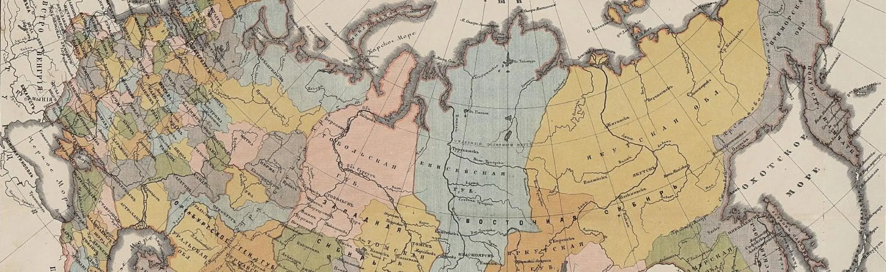

<section class="article">
    <div class="container">
        <div class="article__body">
            <div class="article__body-info">
                <h1>
                    Обширная географія
                </h1>
                <div class="article__body-info-attr">
                    <span>18.12.2024</span>
                    <span>Н. Курпан</span>
                    <span>Время чтения: ≈ 15 мин.</span>
                </div>
            </div>
            
            <p class="article__body-desc">
                В некоторых регионах существует проблема отсутствия метрических книг, хранившихся в 1918-1945гг в ЗАГСах
                – книг за период 1860-1917гг. Одним из массовых источников, который иногда позволяет преодолеть эту
                трудность, является фонд Крестьянского поземельного банка (КПБ), в котором содержатся, в том числе,
                списки заемщиков.
                <br><br>
                Банк существовал с середины 1880х годов и предоставлял ссуды, в основном, бывшим помещичьим крестьянам
                для осуществления выкупных платежей за землю (это не единственная категория заемщиков, занимали и
                другие, например, другие категории крестьян, мещане, дворяне из мелкопоместной шляхты). Фонды хранятся
                как в РГИА, так и региональных архивах (сохранность везде разная, но, если фонд сохранился в
                региональном архиве, то вероятность найти именно посемейные списки в нем выше, чем в РГИА).
                <br><br>
                Исходя из опыта обработки более 20000 документов, в 90% дел ф.592 РГИА представлены только списки
                заемщиков (глав хозяйств), менее, чем в 1% дел — посемейные списки, и в остальных 9% — вообще никаких
                списков. Но на моих глазах даже эти списки заемщиков позволяли в некоторых случаях продвинуться в
                исследовании на одно поколение.
                <br><br>
                Кроме списков, в некоторых типах анкет из этих дел встречаются характеристики заемщиков и упоминание
                причин, побудивших их покупать землю, встречаются и прошения отдельных крестьян (даже в групповых
                делах). <span>Подробнее о генеалогических и биографических сведениях, которые можно найти в этом фонде,
                    читайте </span><a href="https://gen.kurpan.ru/genealogicheskie-i-biograficheskie-svedeniya-v-fonde-krestyanskogo-pozemelnogo-banka-v-rgia-f-592/">в отдельной статье.</a>
                <br><br>
                В РГИА хорошая сохранность дел КПБ большинства губерний, но есть существенная проблема — описи слепые, и
                систематизированы только по уездам. Поэтому работа с делами возможна только после оцифровки уезда
                целиком. К счастью, фонд полностью микрофильмирован, микрофильмы можно свободно фотографировать. На
                микрофильм помещается, в среднем, от 4 до 8 дел, а один уезд включает в себя, в среднем, от 70 до 600
                дел. И значит, оцифровка вполне возможна (под оцифровкой понимается фотосъемка с экрана проектора для
                микрофильмов).
            </p>
            <table class="article__body-table">
                <tr>
                    <td class="article__body-table-name">
                        Акмолинская <br> область, <br>
                        29 дел
                    </td>
                    <td class="article__body-table-desc">
                        <span>Кокчетавский - 4 дела </span>(оп.4 дд.1-4) (спонсоры: Юлия Ф.; оцифровка: Дмитрий Кривошей)
                        <br><span>Омский - 10 дел </span>(оп.4 дд.5-14) (оцифровка: Дмитрий Кривошей) <br>
                        <span>Петропавловский - 15 дел</span>(оп.4 дд.15-29) (спонсоры: Ирина С., Мария Максутова, Сергей Калиганов, Юрий А.)
                        <br><br>
                        Дела оцифрованы полностью
                    </td>
                    <td class="article__body-table-info">
                        В ЦГА РК и ИАОО фондов Крестьянского <br> поземельного банка нет
                    </td>
                </tr>
                <tr>
                    <td class="article__body-table-name">
                        Акмолинская <br> область, <br>
                        29 дел
                    </td>
                    <td class="article__body-table-desc">
                        <span>Кокчетавский - 4 дела </span>(оп.4 дд.1-4) (спонсоры: Юлия Ф.; оцифровка: Дмитрий Кривошей)
                        <br><span>Омский - 10 дел </span>(оп.4 дд.5-14) (оцифровка: Дмитрий Кривошей) <br>
                        <span>Петропавловский - 15 дел</span>(оп.4 дд.15-29) (спонсоры: Ирина С., Мария Максутова, Сергей Калиганов, Юрий А.)
                        <br><br>
                        Дела оцифрованы полностью
                    </td>
                    <td class="article__body-table-info">
                        В ЦГА РК и ИАОО фондов Крестьянского <br> поземельного банка нет
                    </td>
                </tr>
                <tr>
                    <td class="article__body-table-name">
                        Акмолинская <br> область, <br>
                        29 дел
                    </td>
                    <td class="article__body-table-desc">
                        <span>Кокчетавский - 4 дела </span>(оп.4 дд.1-4) (спонсоры: Юлия Ф.; оцифровка: Дмитрий Кривошей)
                        <br><span>Омский - 10 дел </span>(оп.4 дд.5-14) (оцифровка: Дмитрий Кривошей) <br>
                        <span>Петропавловский - 15 дел</span>(оп.4 дд.15-29) (спонсоры: Ирина С., Мария Максутова, Сергей Калиганов, Юрий А.)
                        <br><br>
                        Дела оцифрованы полностью
                    </td>
                    <td class="article__body-table-info">
                        В ЦГА РК и ИАОО фондов Крестьянского <br> поземельного банка нет
                    </td>
                </tr>
            </table>
        </div>
    </div>
</section>